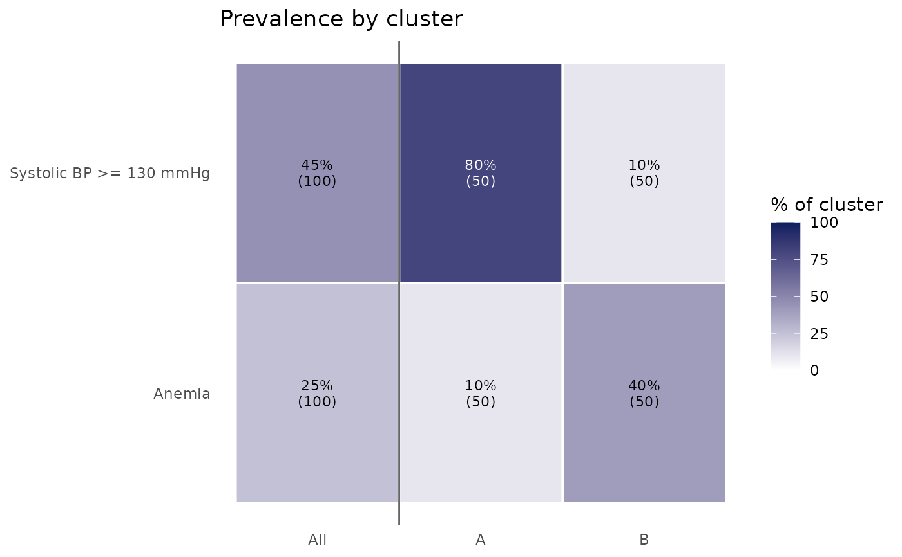

Heatmap of binary feature prevalence by cluster
Source:R/PlotClusterPrevalence.R
PlotClusterPrevalence.RdShows, for each cluster, the percentage of participants with each binary feature (for example, a marker beyond a clinical cutoff, a diagnosis, or a medication), alongside the whole cohort for reference. Use it to describe phenotypes in clinical terms ("share with albuminuria") rather than by means or z-scores, or to compare outcome prevalence across phenotypes.
Usage
PlotClusterPrevalence(
data,
ClusterVar,
variables,
positive = "Yes",
Relabel = TRUE,
show_cohort = TRUE,
digits = 0,
title = "Prevalence by cluster"
)Arguments
- data
A data frame.
- ClusterVar
Name of the cluster column in
data.- variables
Binary variables to show (factor, character, logical, or 0/1 numeric).
- positive
Value counted as present for factor and character variables. Default
"Yes". LogicalTRUEand numeric1are always counted as present.- Relabel
Logical; if
TRUE(default), rows use variable labels.- show_cohort
Logical; if
TRUE(default), add a column for all participants with a cluster.- digits
Decimal places for the cell percentages. Default
0.- title
Plot title.
Details
Percentages use participants with a non-missing value for that feature within each cluster, so features measured in only some participants or cycles are summarized over those who have them. Cells are shaded by prevalence; the cell text gives the percentage and, in parentheses, the number of participants with a value.
Examples
df <- data.frame(
Cluster = rep(c("A", "B"), each = 50),
high_bp = rep(c("Yes", "No", "Yes", "No"), times = c(40, 10, 5, 45)),
anemia = rep(c(TRUE, FALSE, TRUE, FALSE), times = c(5, 45, 20, 30))
)
attr(df$high_bp, "label") <- "Systolic BP >= 130 mmHg"
attr(df$anemia, "label") <- "Anemia"
PlotClusterPrevalence(df, "Cluster", c("high_bp", "anemia"))
